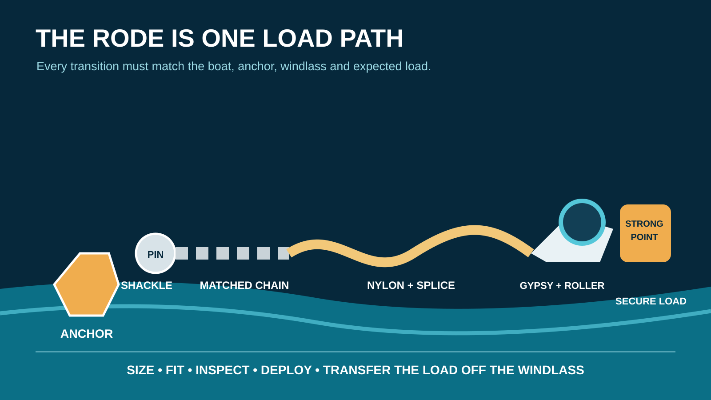

Editorial disclosure: This guide uses the published scope of ABYC H-40 and manufacturer instructions. It does not claim hands-on product testing or replace the boat, anchor, windlass or rode manufacturers' sizing requirements. Retail links may be affiliate links that support Nautical Dream without changing the price you pay.
Affiliate disclosure: Nautical Dream may earn a commission from qualifying purchases made through marked retail links, at no additional cost to you. Recommendations remain editorially independent. As an Amazon Associate I earn from qualifying purchases.
A package labeled for a 25-foot boat can still be wrong. The line may be too large for the locker, the chain may not fit the windlass gypsy, the splice may jam at the deck pipe, or the shackle may become the weakest unverified part. Build the rode as one load path. Begin with the boat and anchoring job, then size and test every transition.
Define the job before choosing a material
Separate lunch-hook anchoring in protected water from unattended overnight anchoring, current, open-water exposure and storm preparation. Record the boat's length, displacement, windage, normal anchoring depth, bow height above the water and the longest credible stay. A light runabout used for supervised swimming has a different system from a high-sided cruiser sleeping aboard.
ABYC lists H-40 for anchoring, mooring and strong points. The full standard controls professional design work; a retailer's boat-length table does not. Use the boat builder's strong-point guidance and the anchor manufacturer's rode recommendations as starting constraints, then reconcile them with the actual windlass and locker.
For deployment technique and scope, use How to Anchor a Boat and the anchor-scope guide. This page answers the narrower buying question: what connects the anchor to the boat?

Rope-chain is the practical default for many trailer boats
Three-strand or braided nylon provides elasticity that can soften shock loads, is lighter than all-chain and usually stores efficiently. Chain at the anchor end resists abrasion, adds weight near the seabed and presents a durable connection to the anchor. Fortress, for example, publishes model-specific rope, chain and shackle guidance and calls for nylon plus chain; that advice applies to its anchors and should not be silently generalized to every system.
Three-strand nylon is economical, inspectable and easy to splice, but can hockle and feel rough. Eight-plait can flake into shallow lockers more neatly, but the exact line construction must be approved for the windlass and splice. Polyester has lower stretch and is not an automatic substitute. Polypropylene floats and generally belongs to other jobs, not primary anchor rode.
All-chain solves some problems and creates others
All-chain rode offers abrasion resistance and dependable windlass handling when every component is matched. It also adds substantial bow weight, can accelerate corrosion where coatings are damaged, transmits shock without a nylon snubber, and demands a locker deep enough for chain to fall away from the gypsy.
Do not convert to all-chain because it looks more serious. Confirm the boat's trim and loading allowance, windlass pull and working load, breaker and wiring, bow roller, chain stopper, locker drainage and retrieval plan if power fails. The windlass manufacturer—not a generic chain label—controls the compatible chain standard and pitch.
Chain size is more than link diameter
Two chains with the same nominal diameter can have different pitch, width, grade and calibration. A gypsy grips a particular geometry. The wrong chain may ride, jump, jam or release under load even when it looks close on the dock.
Read the windlass model plate and manual. Record the accepted chain specification, not merely “quarter-inch.” If the chain is unmarked or its standard cannot be proved, do not build a safety-critical system around a guess. Calibrated chain is manufactured for consistent engagement; it still has to match the named gypsy.
For a manual system, confirm strength, corrosion protection, weight and handling. For a powered system, all of those matter plus exact mechanical fit. Have a qualified marine technician evaluate any uncertain windlass, structural or electrical installation.
Size rope by load, handling and the machine
Diameter influences strength, stretch, grip and storage volume. Larger is not automatically safer: oversize rope may jam a gypsy, refuse to bend around the splice, pile beneath the deck pipe or exceed the intended geometry. Undersize rope can reduce strength, handling comfort and chafe life.
Use the most conservative requirement from the boat builder, anchor manufacturer and windlass manual, while checking that all three can coexist. Compare published working-load information using like terms; breaking strength is not working load. Knots, splices, age, contamination and chafe change real performance.
Measure locker volume and vertical fall. Pay out and retrieve the entire rode at the dock while the bow is controlled. A line that works only when someone manually pushes the pile away from the gypsy is not a finished system.
The connections deserve their own specification
The anchor shackle, swivel if used, rope-chain splice, thimble, eye splice, bitter-end attachment and deck strong point complete the load path. Each needs traceable material, dimensions and a working load compatible with the system. A decorative stainless swivel with no published rating is not an upgrade.
Confirm that the shackle fits through the anchor's attachment point without binding and that its pin cannot work loose. Mouse or secure it only by an appropriate published method. Avoid mixing metals casually; galvanic behavior, crevice corrosion and coating damage matter in wet lockers.
The bitter end should prevent accidental loss yet remain releasable in a genuine emergency according to the boat's plan. Do not bury it beneath inaccessible gear. Label the rode length and inspect the terminal connection.
Measure enough rode without inventing one universal number
Required deployed length depends on water depth, bow height, conditions, bottom, nearby traffic and the anchor manufacturer's method. Total rode must cover the deepest realistic anchorage at the chosen scope plus reserve for maneuvering, tide or water-level change and a safe bitter end.
Manufacturer examples illustrate principles, not universal law. Fortress publishes a minimum 5:1 scope for its selection guidance and chain recommendations tied to depth. Mantus discusses longer cruising rodes. Your system must follow the exact anchor and boat plan, local conditions and current seamanship—not the largest number found online.
Mark the rode at known intervals using a method compatible with the rope, chain and windlass. Keep the marking key at the helm. A crew cannot use scope accurately if nobody can tell how much has left the locker.
Inspect the places that actually fail
- Flattened, glazed, stiff, discolored or cut nylon.
- Rust scale, deep pitting, bent links or damaged galvanizing.
- A rope-chain splice with broken strands, hard spots or poor gypsy travel.
- A loose shackle pin, distorted swivel or mismatched connector.
- Sharp bow-roller, chock or locker edges creating repeat chafe.
- A windlass that jumps chain, slips rope or carries the static anchor load.
- A bitter end or deck strong point that cannot be inspected.
Wash and dry as the manufacturers direct, remove mud and salt, and log inspections. Replace by condition and published retirement criteria. Do not hide localized damage by reversing the rode without understanding the new load and chafe points.
The compatibility worksheet—and the no-buy option
The no-buy option is a documented inspection. If the existing rode matches the anchor and windlass, retains sound material and connections, has enough verified length, runs cleanly and terminates at an appropriate strong point, replacement may add no safety. Spend the time on practice and chafe control instead.
Frequently asked questions
Is rope and chain better than all-chain anchor rode?
Neither is universally better. Rope-chain is lighter and supplies nylon stretch; all-chain resists abrasion and handles well on a matched windlass but adds bow weight and needs a snubber, suitable locker and recovery plan.
Can any quarter-inch chain fit a quarter-inch windlass gypsy?
No. Link pitch, width, grade and calibration differ. Use the exact chain standard named in the windlass manual.
How much chain should be attached to an anchor rode?
Follow the anchor and boat manufacturers. Published examples vary by anchor, boat and depth; a universal boat-length shortcut can conflict with the actual system.
Should the windlass hold the boat at anchor?
No. Windlass manufacturers direct owners to transfer the load to an appropriate strong point or chain stopper rather than using the windlass as a mooring bollard.
When should anchor rode be replaced?
Replace it when inspection or manufacturer criteria identify strength, chafe, corrosion, splice or compatibility concerns. Age alone does not reveal condition, and visible damage should not be ignored.